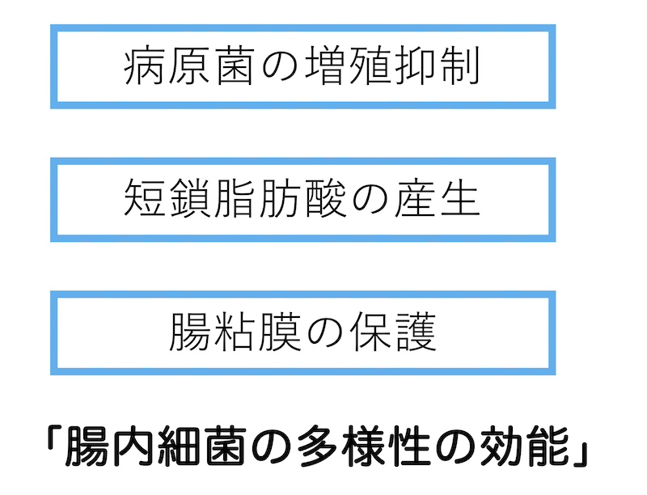
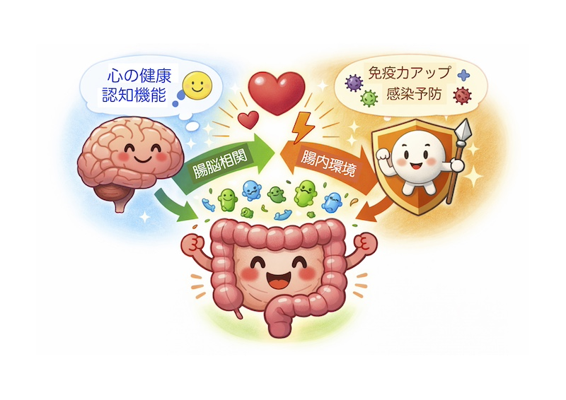
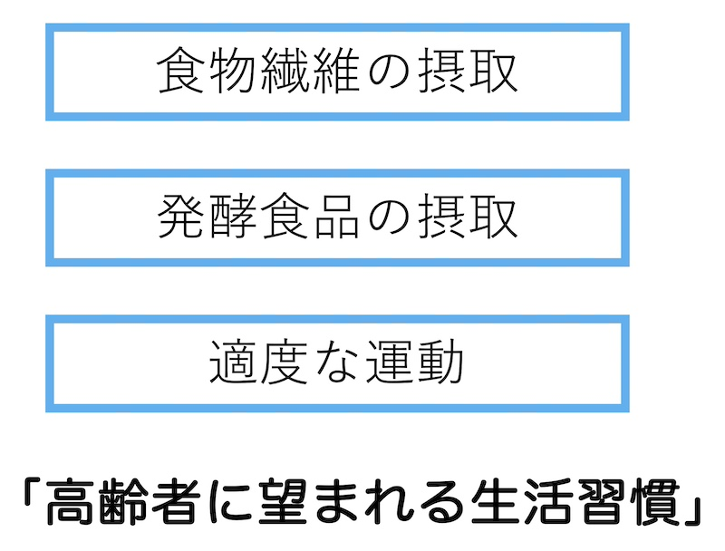

公開日：2026年5月｜最新更新：2026年5月
第1章 腸内細菌とは何か
私たちの腸内には100兆個以上の細菌が共存しています。その死骸は便の約3分の1を占めるとも言われるほど、腸は「細菌の世界」です。
現在は「善玉菌・悪玉菌」という単純な分類よりも、腸内細菌全体のバランスと多様性が重要と考えられています。
- 病原菌の増殖抑制
- 短鎖脂肪酸（酪酸など）の産生
- 腸粘膜バリアの維持
多様性が保たれると、これらの効果が期待できると言われています。

コラム：短鎖脂肪酸（酪酸など）
短鎖脂肪酸は、腸内細菌が食物繊維やオリゴ糖を発酵して作る有機酸です。代表的なものに酢酸・酪酸・プロピオン酸があります。
腸内の酪酸菌が生産する酪酸は大腸粘膜の主要なエネルギー源であり、腸のバリア機能強化、免疫調節、排便促進などの作用が期待されています。
第2章 高齢になると起こる変化
- 腸内細菌の多様性低下
- ビフィズス菌や酪酸産生菌の減少
- 便秘の増加
- 食事量の減少
- 抗菌薬や多剤服用の影響
加齢とともに、腸内環境に対して上のような変化が見られるようになります。
特に食事量の低下は、腸内細菌の「エサ」である食物繊維不足につながります。
コラム：高齢者の便秘対策
次のような食生活や生活習慣が、便秘対策に有効と言われています。
(1)発酵食品（ヨーグルト・納豆など）
(2)適量の食物繊維
(3)水分補給（目安：約2リットル/日）
(4)バランスの取れた食事
(5)適度な運動
(6)排便リズムの習慣化
第3章 腸と免疫
腸は消化吸収の場であると同時に、「体内最大の免疫器官」です。全身の免疫細胞の約7割が腸に集まっているとされています。
腸内環境が整うと、感染症への抵抗力の維持が期待できます。
コラム：感染症予防（専門的）
腸で作られるIgA抗体は粘膜で病原体の侵入を防ぎます。
小腸のパイエル板にはT細胞・B細胞・NK細胞が集まり、全身の免疫機能に関与しています。
このように腸は、感染予防の最前線なのです。
第4章 腸と脳（腸脳相関）
腸と脳は自律神経・ホルモン・免疫を介して相互に影響し合っています。
腸内環境の乱れは、全身の炎症を通して、脳機能や気分に影響する可能性が指摘されています。
コラム：メンタルヘルスとの関係（専門的）
セロトニンの約90％は腸に存在するとされます。腸内環境の乱れは気分や意欲に影響する可能性があります。
ドーパミン（意欲に関係）やGABA（リラックスに関係）などの神経伝達物質の生成にも影響を及ぼし、不安やうつ病などの精神疾患いも関係すると言われています。
症状が気になる場合は医療機関への相談を推奨します。

第5章 何をすればよいか
1）食物繊維を増やす（最重要）
これらに多く含まれる水溶性食物繊維が重要です。
例：白米→もち麦入りご飯、食パン→全粒粉パン
2）発酵食品は補助として
発酵食品だけに頼るより、まず食物繊維を意識することが重要です。
3）適度な運動
ウォーキングや軽いテニスなど、無理のない全身運動を継続します。
第6章 まとめ
腸内環境が、関係しています。
✔ 食物繊維を意識する
✔ 発酵食品を上手に取り入れる
✔ 適度な運動を続ける
高齢者においては、このような基本的な生活習慣が、腸を支え、全身の健康を支えます。

参考文献・資料
- 厚生労働省．日本人の食事摂取基準（2025年版）．
- 健康長寿ネット．腸内環境と健康．
- 内藤裕二．腸内細菌叢と健康長寿に関する総説．